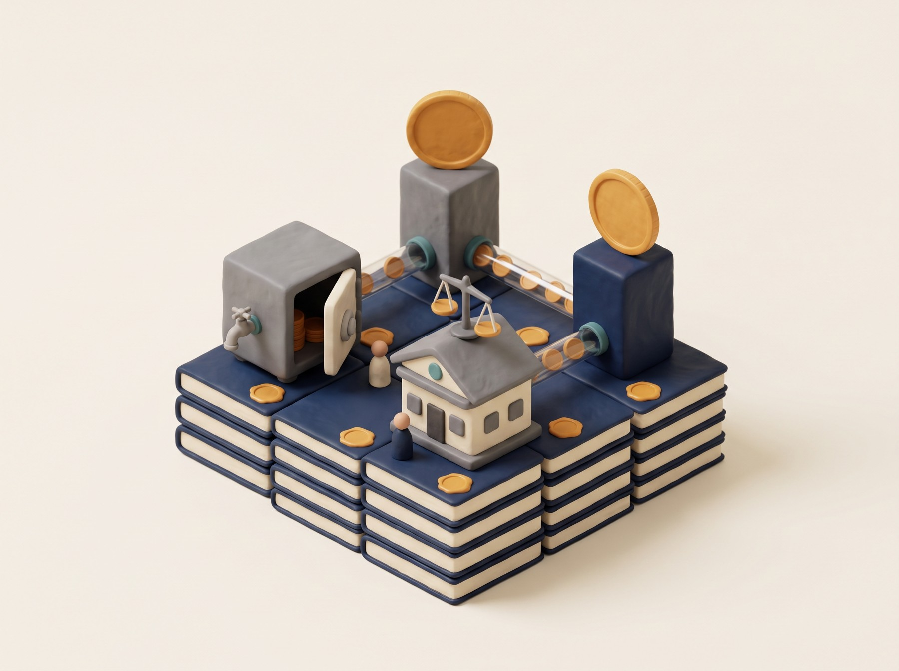
세 파트는 서로 다른 자산을 다루지만 같은 질문을 던집니다. 채권에서는 인정받는 곳(활용처)을, 부동산에서는 권리가 닿는 깊이(등기)를, 원자재에서는 청구권의 실체(어느 금괴인가)를 봅니다.
토큰화 국채는 현금관리 → 디파이 담보 → 마진 담보 → 준비자산으로 쓰임새를 넓혀 왔습니다.
판정 기준이 바뀝니다. APY가 아니라 어디에서 담보로 받아주는가.
직접 발행형은 토큰 이전이 곧 공식 등기 변경(두바이 DLD).
간접 지분형은 토큰이 LLC 지분에서 멈추고, 등기는 LLC 명의로 남습니다(RealT · Lofty · Reental · RedSwan).
1 PAXG = LGD 금괴 순금 1온스, 개별 배정(allocated) 보관, 일련번호 조회.
보관 장소 · 감사 · 실물 인출 조건 · 최소 수량이 상품의 성격을 정합니다.
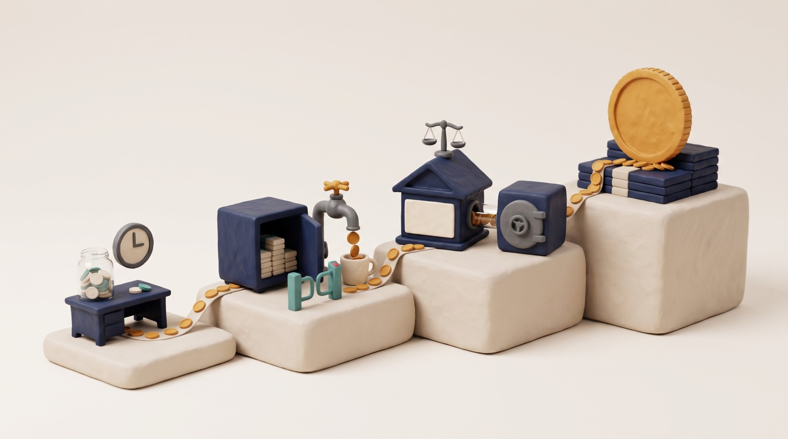
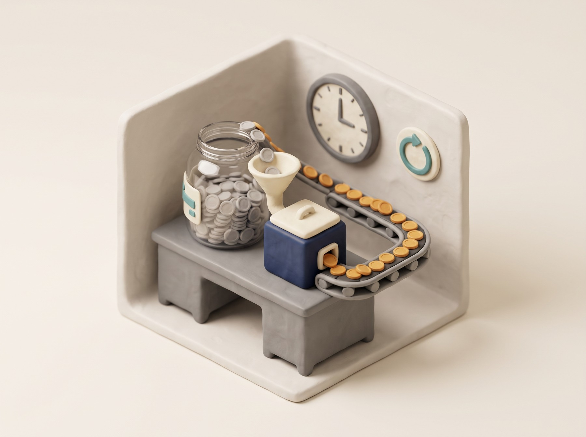
은행 계좌나 전통 머니마켓펀드에 넣으면 온체인 밖으로 나가고 영업시간에 묶인다. "안전하게 굴리면서 바로 꺼내 쓰는" 자리가 없었다.
BUIDL · OUSG · USYC · USDY는 USDC 중심으로 24시간 발행 · 환매가 되도록 설계됐다. BUIDL은 리플 RLUSD로 24시간 교환하는 기능도 발표했다.
디파이 담보(3-2)와 준비자산(3-4)은 "언제든 스테이블코인으로 돌아올 수 있다"는 기능 위에 얹힌 확장이다.
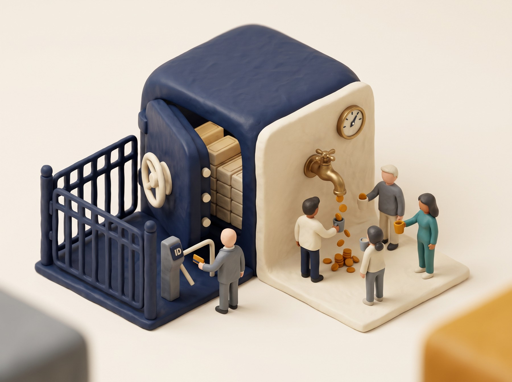
기초 국채와 펀드 환매는 시장이 열려야 움직이는데 담보 계약은 주말에도 돌아간다. 시간의 어긋남을 누가 감당하나.
펀드 순자산가치는 하루 단위로 나온다. 온체인에서는 오라클이 이 값을 받아 담보 가치를 매긴다. 오라클이 틀리면 청산도 틀린다.
Reg D · Reg S 상품은 확인된 투자자만 보유할 수 있다. 담보를 맡기는 사람도, 넘겨받는 사람도 자격이 필요하다.
일반 디파이의 청산은 봇이 담보를 싸게 사 가며 끝난다. 적격성이 붙은 담보는 청산자도 자격을 갖춰야 한다.
| Aave Horizon | Euler | Morpho | |
|---|---|---|---|
| 무엇인가 | 최대 대출 프로토콜 Aave가 2025년 8월 이더리움에 별도로 연 기관용 RWA 대출 시장 | 자산별로 독립된 금고를 만들고 금고마다 담보비율 · 오라클 · 청산 조건을 따로 두는 모듈형 대출 프로토콜 | 시장 단위로 위험을 분리하는 대출 프로토콜. 한 시장 = 담보자산 1개 + 차입자산 1개 |
| 핵심 아이디어 | 담보는 허가형, 차입은 비허가형. 규제가 필요한 쪽만 잠그고 유동성 공급은 연다 | 담보 전용 볼트(ERC-4626). Securitize와 협업해 적격성 · 이전 제한이 붙은 자산을 담보로 편입 | 시장별 오라클 · 청산 LTV · 이자율 모델. 조건이 제각각인 RWA를 각각 독립 시장으로 다룬다 |
| 인정 담보 | Superstate USTB · Circle USYC · VanEck VBILL 등 규제된 토큰화 국채 · 펀드 | VBILL 등 Securitize 발행 자산 (KPK가 큐레이션하는 Securitize 마켓) | mTBILL · mF-ONE · sACRED 등 토큰화 채권 · 사모신용 · 펀드 지분 |
| 가격과 통제 장치 | 체인링크 온체인 NAV 오라클로 담보 가치 반영. 담보 예치 증표 토큰은 전송 불가로 설계해 적격 기관 밖으로 새지 않게 함 | 영수증 토큰은 같은 소유자 안에서만 자유롭게 이동. 소유자 변경 · 청산 시 Securitize DS Protocol 이전 검증 + 수령자 적격성 확인 | 한 시장의 가격 산정 오류 · 환매 지연 · 청산 리스크가 다른 시장으로 번지지 않는다. 담보 공급자는 KYC · 적격성 요건 충족 필요 |
| 한 줄 평 | "열어도 되는 곳만 연다" | "규제 자산의 틀을 깨지 않고 편입한다" | "위험을 방마다 가둔다" |
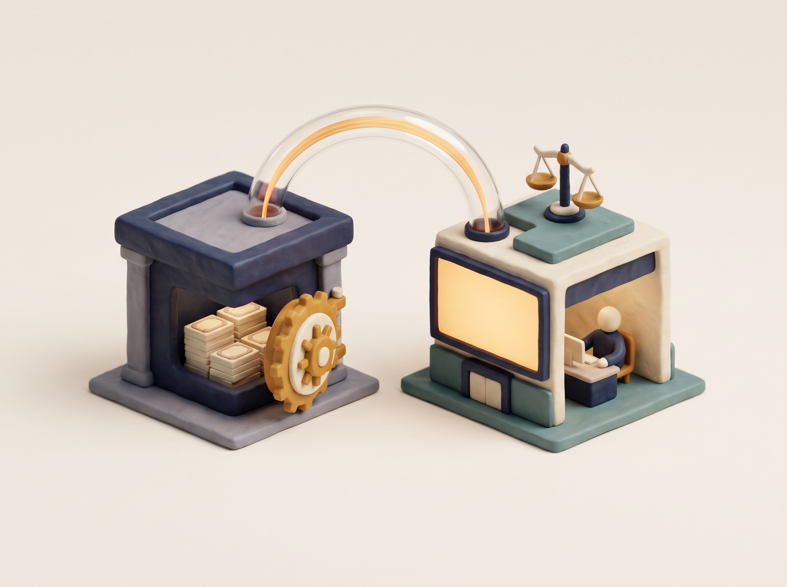
Crypto.com · Deribit이 BUIDL을 거래 담보로 인정, Deribit은 교차담보 자산으로 편입. 현금 대신 이자가 붙는 담보를 맡기고 거래한다.
손익과 부족분은 필요한 금액만 사후 정산. Binance는 BUIDL · USYC · cUSDO를 외부 담보로 지원, BENJI 계열은 Binance · Ceffu 기관 프로그램에 편입됐다.
Drift는 USDY를 마진 · 무기한 선물 담보로 도입, Ondo Perps는 토큰화 자산 담보로 무기한 선물 포지션을 연다. 국채 수익을 받으며 파생상품을 거래하는 셈이다.
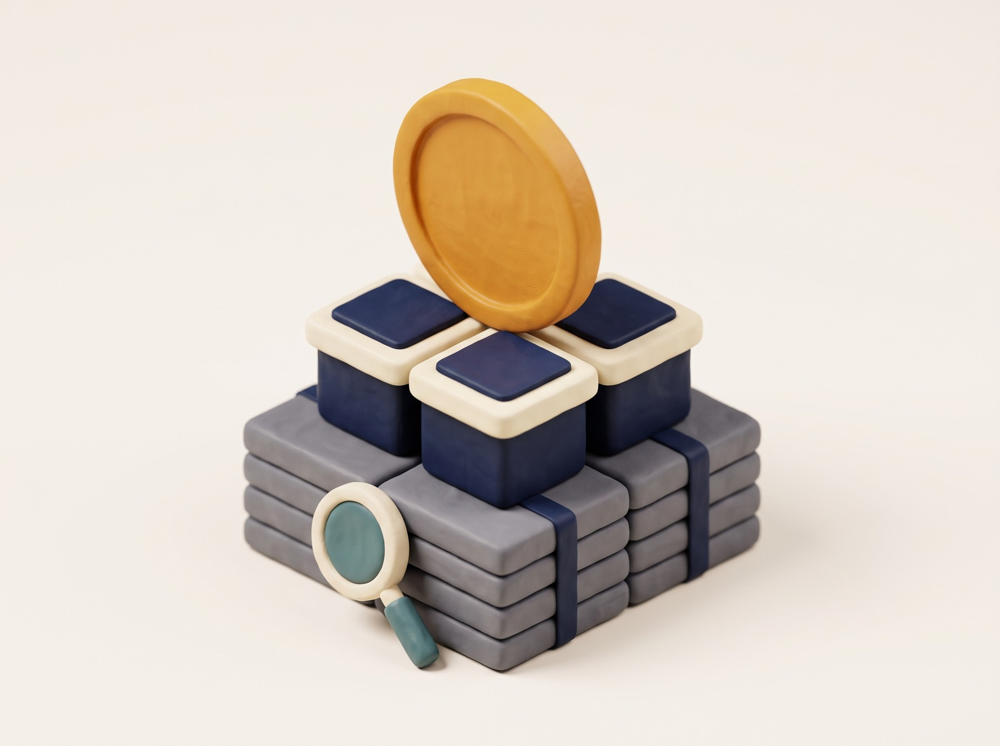
Ethena, 2024.12 출시. BUIDL을 주요 준비자산으로 삼아 토큰화 국채 펀드가 스테이블코인을 뒷받침하는 구조의 대표 사례
Frax. 커뮤니티 거버넌스 제안으로 BUIDL을 담보로 인정, 이후 USTB까지 준비자산 범위 확대
Usual. 토큰화 미국 국채 · repo 기초. Circle의 USYC 같은 토큰화 머니마켓형 자산을 담보로 활용
OpenEden. 자사 TBILL 등 토큰화 국채 상품을 준비자산으로 편입하는 수익형 스테이블코인
| 상품 | 구조 · 투자자 | 규모 (2026.7.1) | ① 현금관리 | ② 디파이 담보 | ③ 거래소 · 마진 담보 | ④ 준비자산 |
|---|---|---|---|---|---|---|
| USYC Circle · Hashnote | 펀드 지분형 · Reg S 비미국인 | 31.0억 달러 (20.9%) | USDC 환매 | Aave Horizon | Binance 외부 담보 | USD0 |
| BENJI 계열 Franklin Templeton | BENJI 미국 등록 MMF · iBENJI BVI 기관용(Reg D) | 24.4억 달러 (iBENJI 15.9 + BENJI 7.5) | 등록 MMF 지분 | Binance · Ceffu 기관 프로그램 | ||
| BUIDL BlackRock · Securitize | 펀드 지분형 · Reg D 적격매수자 | 22.3억 달러 (15.0%) | USDC 24h · RLUSD 교환 | Crypto.com · Deribit · Binance 외부 담보 | USDtb · frxUSD | |
| USTB Superstate · Invesco | 펀드 지분형 · Delaware Statutory Trust | 7.3억 달러 (4.9%) | USDC 청약 · 환매 | Aave Horizon | frxUSD | |
| OUSG Ondo | 펀드오브펀드 · Reg D 506(c) 적격매수자 | 4.8억 달러 (3.2%) | USDC · PYUSD 24h | |||
| TBILL OpenEden | 펀드 지분형 · BVI · Reg D 506(c) | 2.1억 달러 | USDC 발행 · 환매 | USDO | ||
| USDY Ondo | 연계 증권형 노트 · Reg S 비미국인 | 상위 5개 상품군 포함 (개별 수치 미기재) | USDC 24h | Drift 마진 · 무기한 선물 | ||
| VBILL VanEck · Securitize | 펀드 지분형 · BVI · Reg D 506(c) | 0.55억 달러 (0.4%) | Aave Horizon · Euler |
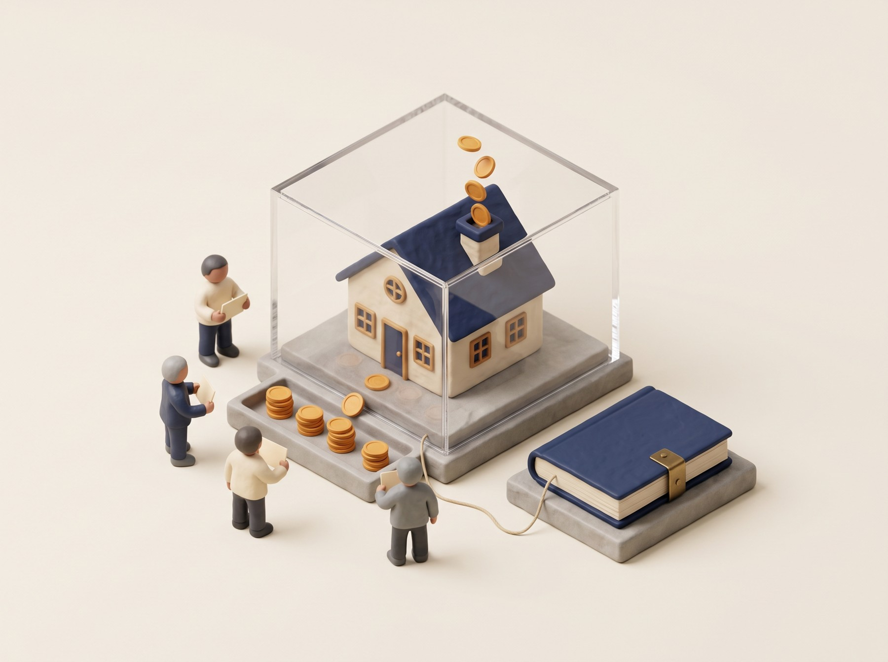
공식 등록 기록의 주인. 토큰 발행 · 이전 결과를 등기 기록에 반영
구조 설계 · 발행 · 등기 연동 인프라. VARA의 가상자산 발행 + 브로커-딜러 인가 보유
투자자가 실제로 청약하고 거래하는 플랫폼
발행 · 이전과 소유권 기록을 하나의 체계로 처리하려면 등기기관 · 규제기관 · 플랫폼이 기준을 함께 설계해야 한다
역할을 가리키는 말이고, 법적 형태는 LLC · 주식회사 · 조합 · 신탁 무엇이든 될 수 있다. 부동산 토큰화에서는 주로 LLC를 쓴다.
자기 명의로 부동산을 소유하고 계약을 맺는 독립 법인. 투자자는 멤버십 지분을 보유하고, 책임은 출자한 금액 범위로 제한된다.
한 건물의 수익과 부채를 다른 프로젝트와 분리하기 위해서다. 옆 건물의 소송이나 부채가 내 토큰으로 번지지 않는다.
| RealT | Lofty | Reental | RedSwan CRE | |
|---|---|---|---|---|
| 대상 자산 | 미국 주거용 부동산 | 미국 주거용 부동산 | 미국 · 스페인 · 멕시코 · 도미니카공화국 · UAE 등 다국가. 주거 · 관광 · 개발 · 리모델링 · 단기 매입매각 | 기관급 상업용. 호텔 · 물류시설 같은 개별 자산부터 포트폴리오 · 폐쇄형 펀드까지 |
| 구조 | 부동산별 LLC + 토큰. 등기상 소유자는 LLC | 단일 자산 LLC 모델 | 프로젝트별 LLC. LLC가 직접 보유하거나 현지 법인 · 개발사에 투자하거나 대출을 제공 | 상품에 따라 프로젝트 SPV 또는 부동산 펀드 지분 |
| 체인 · 최소 투자 | Ethereum · Gnosis Chain · 약 50달러 | Algorand · 약 50달러 | Polygon · 약 100달러 · 유로 | 미국 투자자 Reg D 공인투자자, 미국 외 Reg S 역외 발행 |
| 수익 배분 | 임대료에서 세금 · 보험 · 관리비 · 수선비를 뺀 순수익을 스테이블코인으로 | 임대수익을 지분에 따라 일 단위 정산 | 임대형은 임대 · 매각수익, 개발형은 종료 후 매각대금에서 비용 차감 후 분배 | 상품별 상이. RedSwan Markets(FINRA 브로커딜러 · SIPC)가 판매, RedSwan PC(SEC 등록 투자자문)가 자문 |
| 눈여겨볼 점 | 각 부동산의 수익과 비용을 LLC별로 분리 관리 | 토큰 비례 투표로 임대 조건 · 수선 · 관리사 교체 · 매각 결정. 마켓플레이스는 24시간 주문 가능하지만 체결은 수요에 달림 | 108개국 약 4.2만 명, 119개 프로젝트 누적 1억 달러 이상. 프로젝트 토큰(SPV 지분)과 RNT 유틸리티 토큰은 별개 | 자체 집계 약 40억 달러 토큰화 + 약 52억 달러 파이프라인. 파이프라인은 발행 완료 실적이 아니며 집계 기준 미공개 |
직접 발행형은 토큰 이전과 공식 소유권 변경을 하나의 절차로 잇는다. 등기기관 · 규제기관 참여가 필요해 정부 파일럿 중심.
간접 지분형은 기존 등기를 유지한 채 SPV · 펀드 지분을 토큰화한다. 여러 국가 · 자산 유형에 적용하기 쉬워 시장의 주류.
카사 · 루센트블록(소유) · 펀블은 부동산을 수익증권 구조로 조각투자했다. 미국의 LLC 지분 토큰과 법적 껍데기는 다르지만, 고가 · 비유동 자산의 단위를 낮추고 분배를 디지털화한다는 목표는 같다.
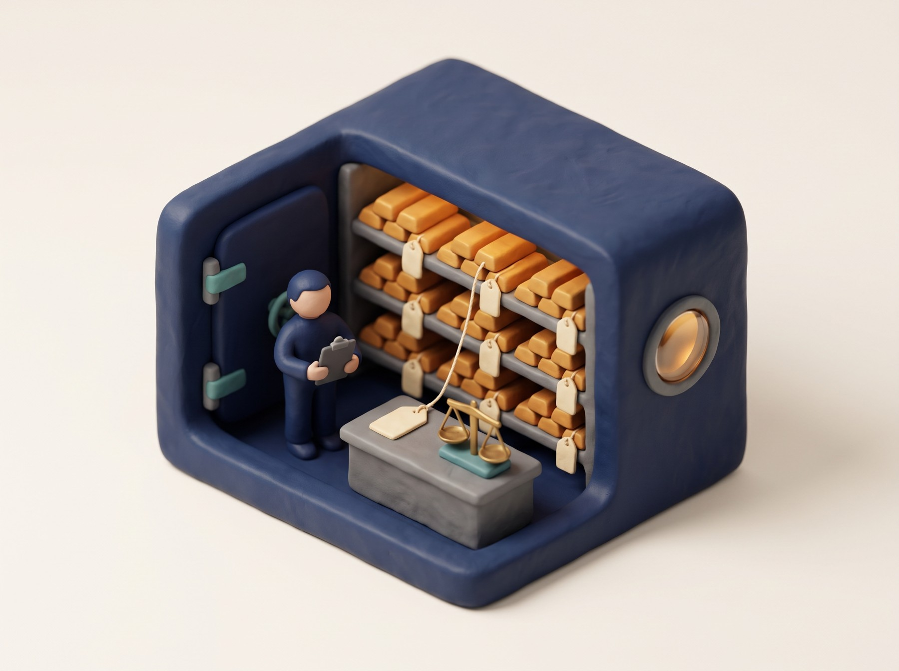
| PAX Gold (PAXG) | Tether Gold (XAUT) | Kinesis (KAU · KAG) | |
|---|---|---|---|
| 발행사 · 감독 | Paxos Trust Company, N.A. 미국 연방 인가 신탁은행. 미국 통화감독청(OCC) 감독 | TG Commodities, S.A. de C.V. 엘살바도르 법인. 엘살바도르 디지털자산국가위원회(CNAD) 감독 | Kinesis. 금 · 은 실물 담보 토큰에 결제 · 수익 공유 시스템을 결합한 플랫폼 |
| 1 토큰 = | London Good Delivery 금괴의 순금 1트로이온스 소유권 | 특정 금괴에 배정된 순금 1트로이온스에 대한 비분할 소유권 | 1 KAU = 금 1그램 · 1 KAG = 은 1온스 |
| 보관 · 투명성 | 런던 LBMA 인증 금고, 개별 배정. 보유자가 금괴 일련번호 · 중량 · 보관 금고를 조회 가능 | 스위스 수탁기관, 개별 배정 방식 | 보험과 외부 감사를 적용하는 ABX 제휴 금고 네트워크, 개별 배정 |
| 체인 | Ethereum 등 | Ethereum 발행. 다중 체인 이전용 XAUT0가 TON · Solana 등 지원 | 자체 네트워크 (네이티브 KAU · KAG) |
| 인출 · 특징 | 실물 상환은 보통 LGD 금괴 단위가 필요. 소액 보유자는 USD 상환이나 승인 딜러를 통한 부분 상환 | 특정 금괴에 대한 비분할 소유권 구조 | 네이티브 보유자는 공동 보관된 금 · 은 풀에 보유량 비례 소유권. 거래 수수료 수익 일부를 월별로 배분 |
특정 금괴에 개별 배정됐나, 아니면 풀에 대한 비례 지분인가
런던 LBMA 금고, 스위스 수탁기관, 제휴 금고 네트워크. 관할과 보험이 달라진다
누가, 얼마나 자주, 무엇을 확인하나. 일련번호 조회가 가능한가
가능하다면 어느 단위로. LGD 금괴 단위라면 사실상 기관만 인출한다
부분 상환 · USD 상환 · 승인 딜러 경로의 조건과 수수료
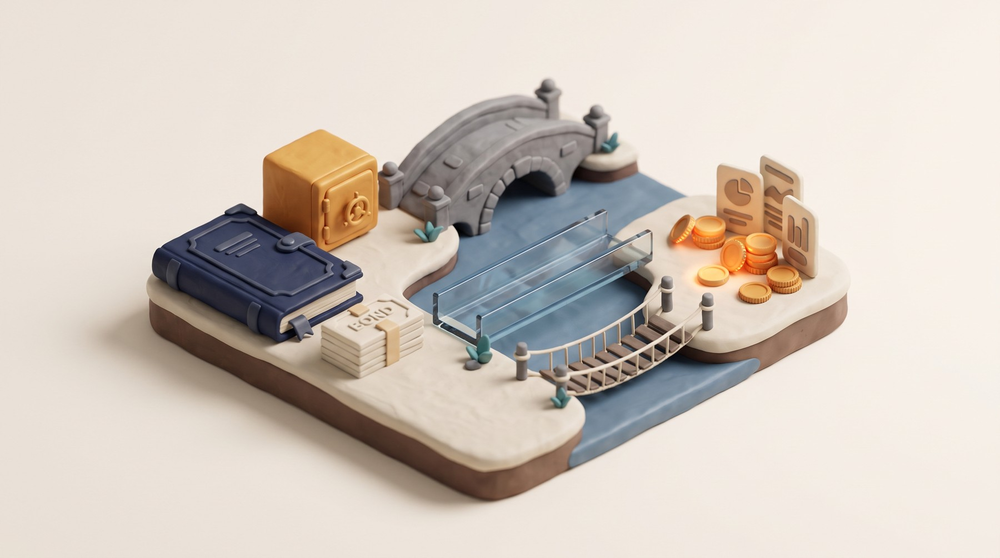
세 다리의 공통 약점도 같다. 다리 건너편(오프체인)에서 일어나는 일인 펀드 환매 지연, 등기 분쟁, 금고 감사 실패는 토큰 코드가 막아 주지 못한다. 그래서 두 아티클 모두 "수탁 · 감사 · 공시 · 환매 조건을 확인하라"로 끝난다.
| 자산 | 오프체인에 남는 실체 | 법적 껍데기 | 토큰이 나타내는 권리 | 가치를 정하는 질문 |
|---|---|---|---|---|
| 국채 | 국채 · repo를 보유한 펀드 장부와 수탁(BNY Mellon · State Street 등) | 펀드(BVI · 케이맨 · 델라웨어) 또는 노트 발행 SPV · Reg D / Reg S | 펀드 지분 또는 발행사에 대한 상환청구권 | 어디에서 담보로 인정받나 |
| 부동산 | 등기부 · 임대차 · 시설 관리 · 세금 · 매각 절차 | 부동산별 SPV(LLC). 예외적으로 등기 시스템 직접 연동(DLD) | LLC 멤버십 지분 (직접 발행형은 등기 연동 소유권) | 권리가 등기까지 닿나, 분배 · 유동성 장치는 |
| 금 | 금고 속 금괴 · 감사 · 보험 · 인출 절차 | 신탁은행(Paxos) · 발행 법인(TG Commodities) · 플랫폼(Kinesis) | 개별 배정된 특정 금괴에 대한 소유권 | 어느 금괴인지 말할 수 있나, 인출 조건은 |
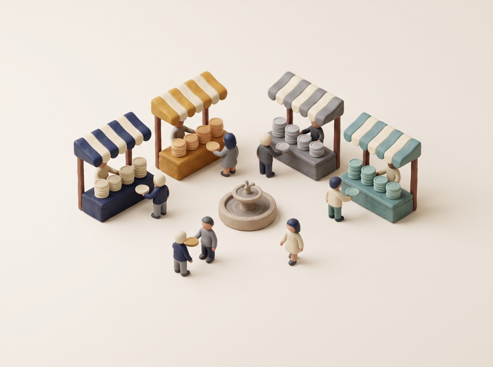
1,000 : 1,000 풀에 USDC 100개를 넣으면 USDT 90.9개만 받는다. 한쪽이 줄수록 값이 빠르게 뛰어 고갈을 스스로 막는다. ETH/USDC처럼 상대가격이 움직이는 쌍에 맞다.
같은 풀에서 USDC 100개를 넣으면 USDT 100개를 받는다. 가격 충격이 없다. 문제는 USDT가 밖에서 0.8달러가 되어도 풀은 계속 1 : 1로 바꿔 준다는 것. 차익거래자가 풀의 USDC를 전부 빼 간다 (예림님이 든 예시 그대로).
스테이블코인끼리는 평소엔 직선처럼(1 : 1), 위험할 땐 곡선처럼(가격이 움직여 고갈 방지) 행동하는 규칙. 이 요구에서 StableSwap이 나왔다.
StableSwap 곡선은 직선(합)에 고무줄을 걸어 곡선(곱) 쪽으로 당겨 놓은 모양이다. 풀이 균형일 때는 고무줄이 팽팽해 직선을 유지하고, 한쪽 재고가 빠질수록 고무줄이 풀리며 곡선으로 휜다.
A가 클수록 직선 구간이 넓다. "이 둘은 정말 같은 값"이라고 강하게 믿는 설정이다. 그 믿음은 고정이 아니라 균형에서 멀어질수록 자동으로 약해진다. 균형점에서는 A만큼 믿고, 한쪽이 바닥나면 믿음이 0에 가까워져 곱 곡선처럼 행동한다.
1,000 : 1,000 풀에 USDC 100개: 곱은 90.9, A=10은 99.5, A=100은 99.95, 합은 100. 스테이블코인 풀은 A를 크게 잡아 평소 슬리피지를 거의 0으로 만든다.
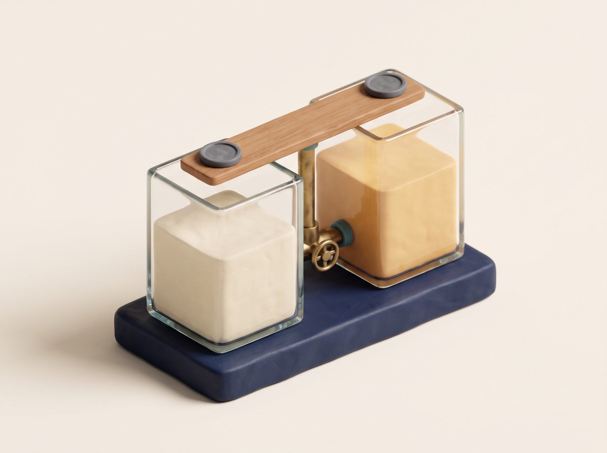
준비자산이 국채여도 상환 규칙과 풀의 유동성이 흔들리면 페그는 흔들린다. 준비자산은 필요조건이지 충분조건이 아니다.
"구멍 나면 누구 주머니에서 나오나." 1 : 1 고정 오라클을 쓴 대출 시장에서는 담보 가격이 늦게 반영되어 그 시장의 공급자가 위험을 떠안는다.
3-4의 새 스테이블코인들(USD0 · frxUSD 등)과 국채 토큰 페어는 보상으로 유동성을 확보한다. 인센티브가 끊기면 풀이 얇아지고, 3-1의 "24시간 환매"도 실질이 약해진다.
상품이 증권이라 공모 등록 대신 면제 조항을 쓰기 때문. Reg D(BUIDL · OUSG · TBILL · VBILL)는 미국 내 적격매수자 사모, Reg S(USYC · USDY)는 미국 밖 투자자 대상 역외 발행. 그래서 같은 국채 토큰인데 살 수 있는 사람이 갈린다.
토큰당 1달러 근처를 유지하고, 수익은 일일 적립 후 매월 신규 BUIDL 토큰으로 지갑에 분배. 반면 USYC · USDY · TBILL은 토큰 가격이 올라가는 방식으로 수익을 반영한다. 담보로 쓸 때 이 차이가 평가 방식 차이로 이어진다.
아니다. Euler는 청산 때도 Securitize DS Protocol 이전 검증과 수령자 적격성 확인을 거치고, Aave Horizon은 담보 예치 증표 자체를 전송 불가로 만들었다. 청산자도 자격이 필요하다.
아니다. 등기상 소유자는 LLC이고 나는 그 LLC의 멤버십 지분을 가진다. 토큰 이전이 등기에 반영되는 구조는 두바이 DLD 파일럿이 거의 유일하고, 그것도 승인 플랫폼 안에서만 거래된다.
소유권은 1온스지만 실물 상환은 보통 LGD 금괴 단위. 소액 보유자는 USD 상환이나 승인 딜러를 통한 부분 상환을 쓴다. 대신 내 토큰이 어느 금괴에 배정됐는지 일련번호 · 금고를 조회할 수는 있다.
맞다. 펀드 층(운용 · 수탁 · 환매 지연)과 스테이블코인 층(상환 규칙 · 풀 유동성)의 위험이 겹친다. USD0++ 사례처럼 준비자산이 멀쩡해도 상환 규칙 변경 하나로 페그가 흔들릴 수 있다. 대신 준비자산이 온체인에 있어 무엇이 들어 있는지는 더 잘 보인다.
규모 7위 VBILL이 디파이 담보 인정처는 가장 많다. 인프라가 되는 쪽은 규모가 아니라 쓰임새다.
네 칸 모두 "언제든 스테이블코인으로 되돌린다"는 24시간 환매 위에 서 있다.
등기까지 닿는 것은 정부가 등기 시스템을 연 두바이 DLD 파일럿뿐. 그마저 승인 플랫폼 안에서만 거래된다.
보관 장소 · 감사 · 인출 단위 · 비용, 이 넷을 묻는 순간 "가격 노출"과 "청구권"이 갈린다.
수학이 슬리피지를 없애고, 인센티브가 유동성을 채운다. 둘 중 하나가 빠지면 준비자산 보고서보다 풀이 먼저 말해 준다.
오늘 본 담보 인정처 관점으로 솔라나 위의 플레이어들을 보면 질문이 하나로 모인다. "이 자산은 솔라나의 어느 대출 · 파생 프로토콜에서 담보로 받아 주나." 성재님 Loopscale, 제희님 Kamino 발표와 바로 이어진다.